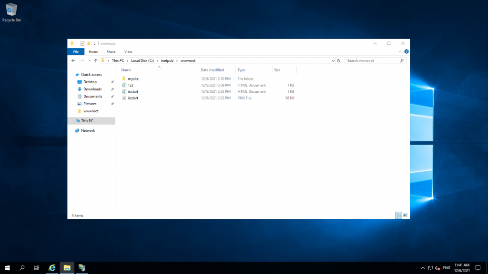
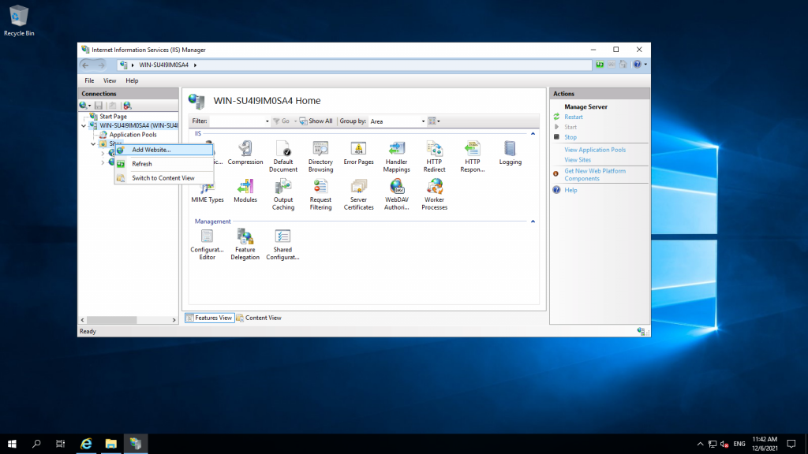
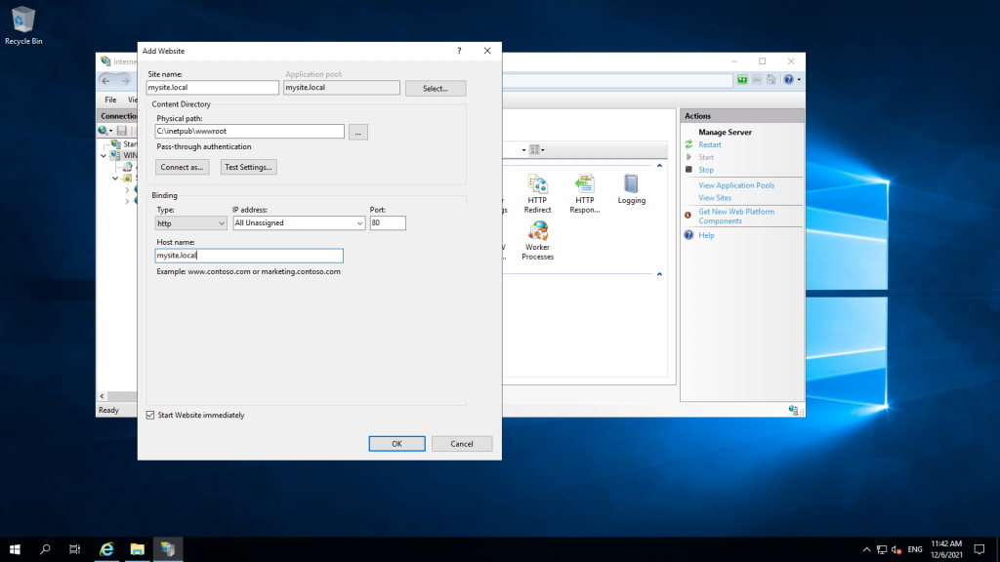

How to host a domain on Windows Server 2019
December 19, 2021
Create an Utho account to try this guide with a $100 credit.
Sign Up

Prerequisites
1. Windows Server
2. IIS
3. Domain (html files)
Step 1. Login into your server via RDP.

Step 2. Open IIS (Install IIS if you don’t have it on your system)
Link on How to Install IIS:

Step 3. Paste your domain files in a folder in this location C:\inetpub\wwwroot
Naming the folder according to your domain name We will name it “mysite”

Step 4. Go to IIS > Sites and click on Add Site.

Input your site name, physical path, and hostname. Click OK.

Step 5. Go to this location: C:\Windows\System32\drivers\etc ….and edit the Hosts file.

Step 6. Go to IIS and click on “Browse mysite.local”

Your domain will open in the browser.
Thank you!!
Create an Utho account to try this guide with a $100 credit.
Sign Up